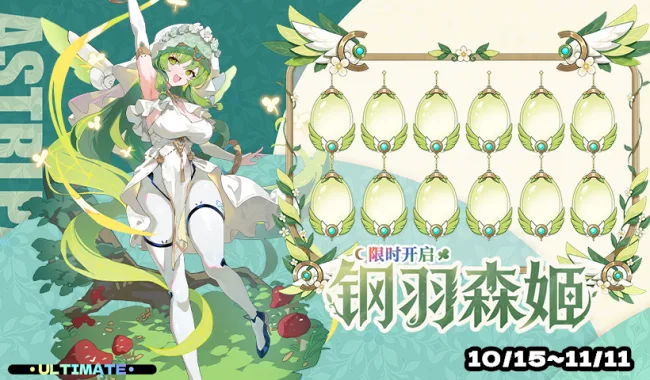

版本与公告官方原文 ↗
官方公告/217
钢羽森姬（限时开启） 发布ID：217 “欢迎来到吉星派对” 活动时间 2026年10月15日(版本更新后)-2026年11月11日23:59(UTC+8) 活动内容 玩家从主界面进入活动系统的“秋日嘉年华”页签，可选择点亮…
钢羽森姬（限时开启） 发布ID：217 “欢迎来到吉星派对” 活动时间 2026年10月15日(版本更新后)-2026年11月11日23:59(UTC+8) 活动内容 玩家从主界面进入活动系统的“秋日嘉年华”页签，可选择点亮1次灯笼。 使用星盘购买点亮灯笼内的道具后，可获得新的点亮机会。 购买所有12个点亮灯笼内的道具，可保证获得所有奖励。 奖励包含： 皮肤钢羽森姬-茉莉×1、 名片-钢羽森姬（动态）×1、 仙女池骰子×1、 黑金礼品卡×1、 角色自选箱×1等。 祝您游戏愉快，今后也请多多支持《吉星派对》 《吉星派对》运营团队